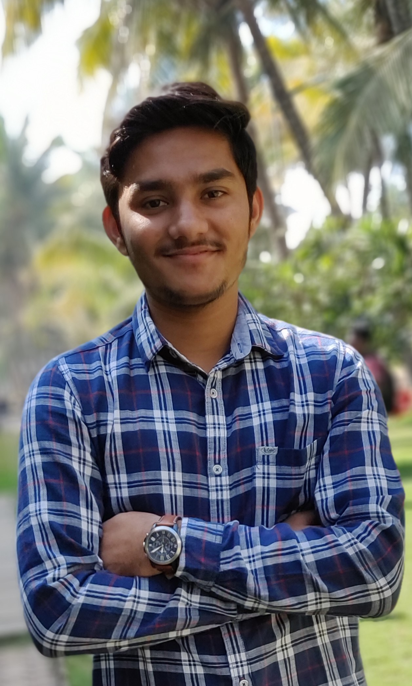

Sarvesh Satish Pathak |
 |
Hello viewers I am Computer student. I am studying in MIT Academy Of Engineering.I have completed schooling from Auxilium Convent High School.After 10th I have completed diploma from Government Polytechnic Ahmednagar.Currently I am studying at MIT Academy Of Engineering 3rd year Btech.I am a solution finder.I like to manage the different projects and also have interest in programming.I also have the industrial experience as I have worked inWeoto TechLabs and currently working at Hapiens Digital. I have interest in different technologies.I like to explore them.I spend my leisure time watching tech videos on YouTube.I keep on practising new things related to technology.I have build many different projects for different subjects all these are available on Github you can check down below. I have attended many Google meetups where I came to know about the new things that are happening in Google. It also gives a hands-on experience about it.Currently I am learning Flutter,Dart and Web development.I have developed many apps using Flutter and Android. Interest:
Hobbies:
Achievements:
Follow me : |
|
|
Copyrights Sarvesh 2019
|
|